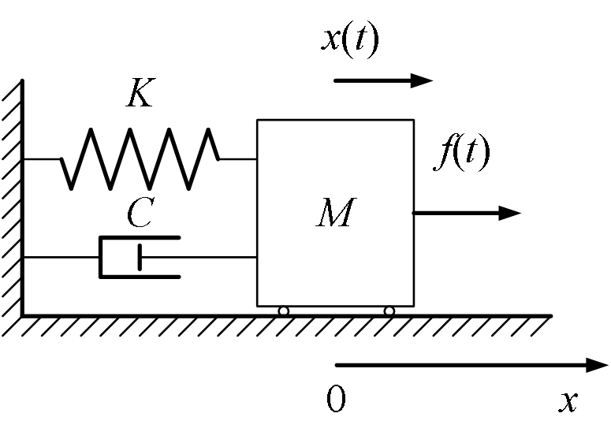
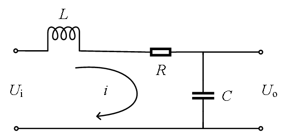
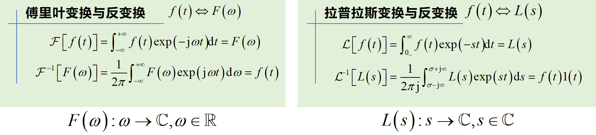
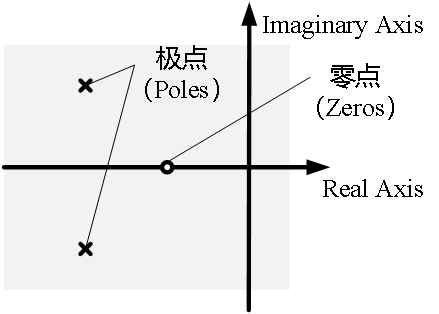

控制系统的数学模型
本章主要介绍控制系统的数学建模方法，包括线性定常系统的时域模型和线性系统的频域模型。通过数学模型，可以分析系统特性、设计控制器并预测系统行为。
本章学习目标
- 了解系统建模的主要目的
- 掌握线性系统的内涵
- 理解线性系统的微分方程及其传递函数表示
- 掌握拉普拉斯变换及其逆变换
- 掌握系统结构图的表示方法及其简化
- 掌握线性系统结构框图的简化方法
章节结构
2.1 线性定常系统
2.2 线性系统的频域模型
2.3 线性系统的图示法
2.4 典型系统的数学模型
笔记说明：本笔记基于PPT内容整理，补充了必要的公式推导和解释说明，确保公式完整性。
线性定常系统
学习目标
- 了解系统建模的内涵及目的
- 掌握线性定常系统的定义
- 明确非线性系统线性化的方法与近似条件
- 了解典型系统的微分方程模型
- 了解线性系统的状态空间模型
系统建模
模型（Model）：物理系统、生物系统或信息系统的数学表示。
建模（Modelling）：建立系统模型的过程，又称模型化。用模型描述系统的因果关系或者相互关系的过程都属于建模。
建模的核心是将实际问题抽象为数学问题，便于分析和设计。
系统建模主要用于三个方面：
- 分析和设计实际系统：通过模型理解系统行为，设计满足要求的系统
- 预测或预报：预测系统某些状态的未来发展趋势
- 最优控制：对系统实行最优控制，使系统性能达到最优
示例：弹簧-质量-阻尼系统
考虑具有阻尼的弹簧-质量系统：

系统描述质量块在外力和偏差下的位置变化：
- ：自治系统（无外部输入）
- ：受控系统（有外部输入）
通过建模可以：
- 分析系统稳定性、平衡点
- 设计系统参数使得系统具有期望的性能
- 预报系统在受扰后（偏离平衡点）的运动轨迹
- 设计施加的力，使得在受扰后尽快回复到平衡点
线性系统定义
线性系统（Linear Systems）：状态变量和输出变量对于所有可能的输入变量和初始状态都满足叠加原理的系统。
叠加原理的数学表述
设系统的状态记为，输入为，输出为。
如果系统相应于任意两种输入和初始状态和，系统的状态和输出分别为和，则对于任意实数、，当输入和初始状态为：
系统的状态和输出必为：
叠加原理的核心思想：系统任意两个输入作用下的输出响应的和恒等于该输入求和后作用下的输出响应。
线性系统的意义
线性系统可以通过研究有限个输入的输出响应判断系统的动态行为。对于线性系统，只需要研究几种典型输入信号的响应即可：
| 信号形式 | 信号名称 | 物理解释 | 应用示例 |
|---|---|---|---|
| 阶跃信号（Step） | 位置恒定 | 位置跟踪控制：卫星的轨道平面、天线的指向 | |
| 斜坡信号（Ramp） | 速度恒定 | 速度跟踪控制：卫星的对地观测，移动目标的跟踪 | |
| 抛物信号（Parabola） | 加速度恒定 | 加速度跟踪控制：用于具有加速移动目标的跟踪，如导弹 |
非线性系统的线性近似
实际物理系统均是非线性的，可以通过模型近似转化为线性系统开展研究。
线性化的数学基础：泰勒展开
对于非线性函数，在平衡点附近进行一阶泰勒展开：
其中为函数在处的导数（斜率）。
线性化的另一种理解：在平衡点附近，系统的动态特性可以用斜率/梯度近似表示。
非线性系统线性化方法
非线性系统的线性近似基于以下步骤：
- 确定系统的平衡点（工作点）
- 在平衡点处对非线性函数进行一阶泰勒展开
- 定义偏差变量：,
- 得到线性化模型：,
- 更一般化的：

近似条件与适用范围
线性近似仅在平衡点附近成立，需要满足小扰动假设：
- 系统状态由实际值转化为相对于基态（平衡态）的偏差值
- 假设偏差值足够小，高阶项可以忽略
- 线性模型仅在平衡点附近有效
典型系统模型
力学系统示例
弹簧-质量-阻尼系统的运动方程：
其中：
- ：质量
- ：阻尼系数
- ：弹簧刚度系数
- ：位移
- ：外力

电气系统示例
RLC电路的微分方程：
或表示为电流形式：
其中：
- ：电感
- ：电阻
- ：电容
- ：电荷
- ：电流
- ：电压源

状态空间表示法
通过状态的定义可以将任意高阶微分方程转化为一阶微分方程组，形成状态空间表示。
状态空间表示的一般形式
对于线性时不变系统，状态空间模型表示为：
其中：
- ：状态向量
- ：输入向量
- ：输出向量
- ：系统矩阵
- ：输入矩阵
- ：输出矩阵
- ：直接传递矩阵
状态空间表示提供了系统的内部描述，便于分析系统的可控性、可观性等特性。
示例：二阶系统状态空间表示
对于二阶微分方程：
定义状态变量：
则状态空间表示为：
矩阵形式：
小结
线性定常系统建模是控制系统分析的基础，通过数学模型可以：
- 描述系统动态行为
- 分析系统稳定性
- 设计控制系统参数
- 预测系统响应
受控对象的建模工作是控制系统分析和设计的基础，准确的模型是成功设计控制系统的前提。
线性系统的频域模型
学习目标
- 掌握Laplace变换及其逆变换
- 掌握线性系统的微分方程与传递函数的联系
- 掌握基于传递函数求解微分方程的方法
- 掌握典型系统的传递函数建模方法
- 了解状态空间与传递函数的关系
拉普拉斯变换基础
关于这块的视频 3Blue1Brown 做得很好，基本上把自控的内容讲了大半。
积分变换的概念
积分变换：通过引入新的参量，对原函数的自变量（通常为时间）进行定积分，得到具有参量表示的定积分结果。如果将引入的参量视为变量，则积分结果可以视为关于引入参量的函数（称为原函数的像函数）。
数学上，积分变换可以表示为：
其中为核函数。
核函数的基本思想是通过一个非线性变换将原始数据映射到一个更高维的空间，在这个新的空间中，数据可能是线性可分的。这样，可以使用线性分类器来处理原本在低维空间中线性不可分的数据。我们要做的拉普拉斯变换就是将函数映射到了无穷维空间。
拉普拉斯变换定义
单边拉普拉斯变换（针对因果信号）：
其中：
-
为复频率变量
-
积分下限为，表示可以处理函数在处不连续的情况（如冲击函数）
-
为因果信号：
因果信号定义
因果信号(causal signal)就是只在时有值，数学上的表达就是：, 。
反因果信号(anti-causal signal)，从字面意思就可以看出，是因果信号的"反",只在时有定义，数学上的表达为:,。
非因果信号(noncausal signal)，任何不是因果信号的信号就称为非因果信号。也就是在，时都不为0的信号。
双边拉普拉斯变换：
控制系统分析中主要使用单边拉普拉斯变换，因为实际系统多为因果系统。
拉普拉斯变换与傅里叶变换的关系
傅里叶变换：
拉普拉斯变换可视为傅里叶变换的推广：
当时，拉普拉斯变换退化为傅里叶变换。

收敛域（Region of Convergence, ROC）
收敛域：能够使积分变换收敛的所有的值的集合（在复平面内）。
重要特性：
- 收敛域仅与有关，即收敛域的边界平行于虚轴
- 因果信号的收敛域是实部最大的极点的右半平面（开集）
- 当收敛域包含时，可以使用终值定理
典型时域信号的拉普拉斯变换
| 原函数 | 像函数 | 收敛域 |
|---|---|---|
| 冲激函数 | 整个平面 | |
| 单位阶跃函数 | ||
| 斜坡函数 | ||
| 指数衰减 | ||
| 正弦函数 | ||
| 余弦函数 |
拉普拉斯变换的基本性质
1. 线性性质
2. 时域平移性质（时延性质）
注意：阶跃信号具有截断作用，时延操作需谨慎处理。
3. 频域平移性质（衰减性质）
4. 尺度变换性质
5. 时域微分定理
推广到阶导数：
在零初始条件下（）：
零初始条件下，时域微分运算反映为域的乘法运算。在实际用的时候一般就是几阶导就是几次方,
6. 时域积分定理
7. 初值定理
适用条件：为有理真分式，且不包含冲激函数及其各阶导数。
8. 终值定理
适用条件：在收敛域内（即所有极点实部小于0）。
9. 时域卷积定理
其中卷积定义为：
- 冲击信号与任意信号的卷积仍然为任意信号
- 线性系统的冲击响应是指在冲击信号作用下，系统的输出信号
- 对于任意形式的输入信号，线性系统的输出可以通过输入信号与系统冲击响应的卷积进行计算
- 系统输出像函数等于冲击响应的像函数与输入像函数的乘积
典型性质应用示例
示例1：脉宽信号的拉氏变换
考虑脉宽信号：
利用线性性质和时延性质：
示例2：正弦信号与微分定理
已知的拉氏变换为，求的拉氏变换。
利用微分关系：
根据微分定理：
因此：
拉普拉斯逆变换
部分分式展开法
对于有理真分式形式的像函数，可以通过部分分式展开求原函数。
基本思路：将分解为简单分式的和，每个简单分式对应已知的时域函数。
1. 单实根情况
设，其中为互异实根。
部分分式展开：
系数的求法（留数法）：
时域对应：
展开：
计算系数：
因此：
给定如下微分方程，若系统具有零初始条件，求时域信号 在阶跃信号
作用下，，的表达式
2. 多重实根情况
设，其中为重实根。
部分分式展开：
系数的求法：
时域对应：
3. 复根情况
设，其中为一对共轭复根。
部分分式展开：
时域对应：
分母：，对应
匹配形式：
比较系数：
因此：
传递函数
传递函数定义
对于线性时不变系统，在零初始条件下，系统输出的拉普拉斯变换与输入的拉普拉斯变换之比称为传递函数。
设系统微分方程为：
在零初始条件下取拉普拉斯变换：
传递函数：
传递函数的性质
-
由系统决定，与输入无关：传递函数表征了系统输入/输出关系的固有属性
-
有理真分式：实际物理系统通常满足
-
零极点形式：
- ：零点（使分子为零的值）
- ：极点（使分母为零的值）
- ：增益系数
-
系统阶数：由分母多项式的最高次数决定
零极点分布与系统特性
零极点分布图直观展示系统特性：

极点位置决定系统稳定性：
- 所有极点实部小于0：系统稳定
- 有极点实部大于0：系统不稳定
- 有极点实部等于0：系统临界稳定
系统的特征方程式：
特征方程的根即为系统的极点。
频率响应
在正弦输入作用下，稳态输出为。
频率响应由传递函数在处的值决定：
其中：
- 幅频特性：，输出幅值与输入幅值之比
- 相频特性：，输出相位与输入相位之差
状态空间与传递函数的关系
状态空间到传递函数
对于状态空间模型：
取拉普拉斯变换（零初始条件）：
由第一式：
代入第二式：
传递函数：
传递函数到状态空间
传递函数到状态空间的转换不唯一，有多种实现方式：
- 可控标准型
- 可观标准型
- 对角标准型
- 约当标准型
状态空间模型与传递函数可以相互转化，但状态空间表示不唯一，而传递函数是唯一的。
频域模型求解微分方程示例
示例：二阶系统响应
系统微分方程：
初始条件：
输入：（单位阶跃）
求解步骤：
-
取拉普拉斯变换：
-
代入初始条件：
-
解出：
简化：
-
部分分式展开：
计算系数：
-
完整表达式：
-
拉普拉斯逆变换：
小结
线性系统的频域模型通过拉普拉斯变换建立了时域与频域的联系：
- 时域微分方程 频域代数方程：简化了微分方程的求解
- 传递函数：系统特性的频域描述，便于分析稳定性、频率响应等
- 零极点分析：直观反映系统动态特性
- 状态空间与传递函数：两种模型可以相互转换，各有优势
频域方法是控制系统分析与设计的重要工具，特别适用于线性时不变系统的分析和综合。
补充公式与重要概念
重要公式总结
1. 拉普拉斯变换核心公式
定义式：
常见变换对：
2. 微分方程到传递函数的推导
对于一般阶线性微分方程：
在零初始条件下取拉氏变换：
传递函数：
3. 部分分式展开系数公式
单实根：
重实根：
复根对（）：
其中和为实数。
实践练习与思考题
练习1：传递函数推导
已知系统微分方程：
求系统的传递函数。
在零初始条件下取拉氏变换：
传递函数：
练习2：拉氏逆变换
求的原函数。
部分分式展开：
计算系数：
因此：
工程应用注意事项
- 实际系统建模：实际物理系统多为非线性，线性化需谨慎选择工作点
- 模型精度：线性模型在小信号条件下有效，大信号可能导致模型失效
- 参数辨识：传递函数参数需通过实验数据辨识获得
- 模型验证：建立模型后需通过实验验证其准确性
参考文献与延伸阅读
-
经典教材：
- 《自动控制原理》（胡寿松主编）
- 《现代控制工程》（Katsuhiko Ogata著）
- 《控制系统设计》（Gene F. Franklin等著）
-
重要概念延伸：
- 根轨迹法：基于传递函数极点分布的系统分析
- 频率响应法：通过Bode图、Nyquist图分析系统
- 状态反馈与观测器设计
-
软件工具：
- MATLAB/Simulink：控制系统建模与仿真
- Python Control Systems Library：控制系统分析与设计
总结
本章系统地介绍了控制系统的数学模型，涵盖了两个主要方面：
2.1 线性定常系统（时域模型）
- 系统建模的基本概念与方法
- 线性系统的定义与叠加原理
- 非线性系统的线性化近似
- 典型系统（力学、电气）的微分方程模型
- 状态空间表示法
2.2 线性系统的频域模型
- 拉普拉斯变换的定义与性质
- 典型信号的拉氏变换对
- 拉氏变换的基本性质（线性、时移、频移、微分、积分等）
- 拉普拉斯逆变换与部分分式法
- 传递函数的概念、性质与零极点分析
- 状态空间与传递函数的相互转换
核心价值
- 数学工具的统一：拉普拉斯变换将时域微分方程转化为频域代数方程，大大简化了系统分析
- 系统特性的直观描述：传递函数和零极点分布直观反映系统稳定性、动态响应等特性
- 设计方法的系统化：为控制系统设计提供了系统化的数学框架
掌握控制系统的数学模型是进行控制系统分析、设计与优化的基础。在实际工程应用中，需要根据具体问题选择合适的模型表示方法，并结合实验数据验证模型的准确性。